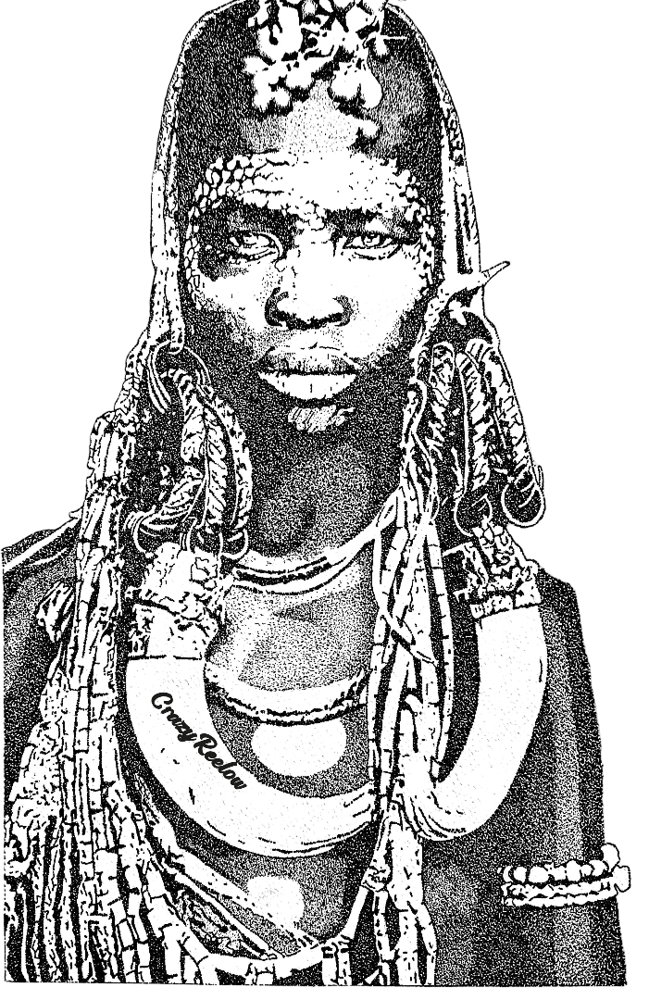

South
African
Drawings
Done
Years
Experience
Commission
Immortalize your favourite pictures of your kids, pets and idols through pointillism drawings!
Each dot tells a story. Holds an emotion. And at the end of the day, when all the dots connect: a beautiful picture comes to life. Pointillism reveals that meaning emerges not from isolation, but from harmony—tiny strokes of color, distinct yet inseparable, forming a greater truth. The artist's patience mirrors perception itself: step back, and chaos becomes clarity.
Pointillism
Animals in art symbolize instinct, freedom, and humanity's bond with nature. From caves to surrealism, they mirror our fears, myths, and reverence. As guardians or allegories, they reveal wordless truths, bridging wild and spiritual worlds.
Works
Animals are part of our lives. And what's the best way of celebrating their lives by getting a drawing of them. To make them feel special and loved.
Size A5
R1500
Size A4
R3000
Size A3
R4500
Size A2
R6500
Animals
Pointillism animal drawings bring wildlife to life with intricate dots. Each piece captures nature's beauty through vibrant, detailed artistry. A stunning tribute to patience and skill.
Just like Ed Sheeran said "we keep this love in this photograph". Portraits are timeless. Even when a loved one is no longer there, when you look at the walls. It feels like they're still with us.
Size A4
1 Person:R1500
2 People:R2500
3 or More People:R3500
Size A3
1 Person:R4500
2 People:R5500
3 or More People:R6500
Size A2
1 Person:R8000
2 People:R10 000
3 or More People:R12 000
Portraits
Pointillism portraits transform tiny dots into stunning, lifelike art. Each piece captures emotion and depth with vibrant, meticulous detail. A true celebration of patience and vision.
Transform your space with custom Pointillism wallpapers—handcrafted dots blending into breathtaking art. Unique, vibrant, and made just for you. Order your masterpiece today!
Size A5
R1500
Size A4
R3000
Size A3
R4500
Size A2
R6500
Wallpapers
Pointillism celebrity portraits capture icons with mesmerizing detail—each dot crafting lifelike emotion. A unique blend of precision and artistry that celebrates fame in stunning style.
Discover elegant nude pointillism art—delicate dots forming timeless beauty. Each handcrafted piece celebrates the human form with subtle sophistication. Explore the collection today.
Size A3
R8000
Size A2
R10 000
Flirtatious
Pointillism nude drawings celebrate the human form with delicate dots, blending artistry and elegance. Each piece reveals beauty through meticulous detail and timeless sophistication.
Biography
Hi world! My name is Refilwe Motaung. Born and raised in Kroonstad, Free State. I started drawing from the age of 6/7 years. Mainly specializing in cartoons. My relationship with art, has always been on an off throughout the years.
2020 lockdown happened. Since I had nothing better to do with my time, I decided to rekindle my love for art. I practiced shading, since I wanted to do something out of my comfort zone.. sometimes my shading was good and sometimes it was bad.
And y'all know how we artist criticize ourselves yea.. but honestly shading wasn't making me happy. Then one faithful night (28Aug2020), I was looking at this picture of certain models, for whatever weird reasons, I saw dots in that picture.. since I was still practicing, I decided to try drawing that picture with dots.
I had a vision of how it's supposed to look in my head once it's done.. you know when they say trust the process, that's what I did. The final outcome came out looking way better than what I have imagined... And that's how my art style, pointillism was born. I guess the name CrazyReelow is fitting now because when people see my work they constantly say I'm crazy!
FAQs
What is pointillism?
A painting technique using small dots of pure color that blend in the viewer's eye to form an image.
How long does a piece take?
Time varies by size—small works take days, large pieces can take weeks or months due to meticulous dotting.
Do you work from photos?
Yes! I can transform your photo into a custom pointillism piece or create original compositions.
What materials do you use?
High-quality inks, archival pens, and fine paper/canvas to ensure longevity and vibrancy.
Are commissions open?
Yes! Contact me with your idea, size preferences, and deadline for a personalized quote.
Do you ship internationally?
Absolutely! Shipping costs vary by location—message me for details.
How do I care for my artwork?
Keep away from direct sunlight and humidity. Frame under UV-protective glass for best preservation.
Do you offer digital prints?
Yes! Limited-edition prints of select works are available for a fraction of the original’s cost.